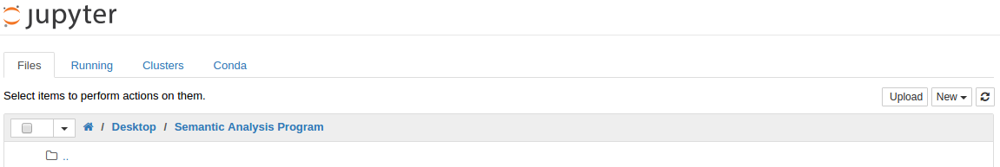
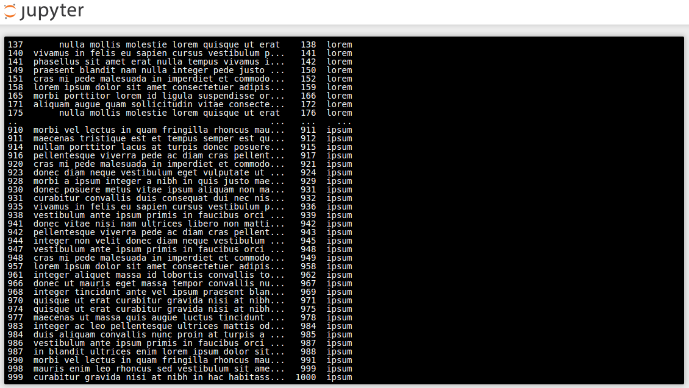

As a first article on this new blog let’s consider a real case.
A few weeks ago a friend was asked by his client to quickly analyze raw data extracted from their customer relationship management tools..csv format and needs to check for the presence of offending words within the sales comments regarding their prospects or customers.
Problem
He didn’t have any other tool than Excel to do this analysis efficiently on a daily basis on files with tens of thousands entries each.
Finding the right tools
Using Excel as an analysis tool can be sufficient to analyze small files punctually because it is flexible and most people know it better than any other software.
Even if Excel usage can be considerably improved by the creation of macros, it lacks the power to handle huge files without the risk of crashing or preventing you from doing anything on your computer while it calculates.
A great way to do data analysis is to use the Python language with Pandas, an associated library providing tools for structuring and analyzing your data.
If you are familiar with Linux or Mac, you can simply install both Python and Pandas through the command line, but I would recommended to install Anaconda a complete Data Science platform available for Windows, Mac and Linux.
Anaconda being a complete set of tools, we will start by using The Jupyter Notebook a web application that will allow us to create our small analysis program on our computer.
Using the Jupyter Notebook
After the installation of Anaconda, launch The Jupyter Notebook.anaconda/bin folder in your path: export PATH=$PATH:"~/anaconda3/bin" (or add it in your ~/.bashrc file directly).
Create a new folder on your computer and access it within Jupyter: 
Create a new file and choose “Python” as the language.
Before we start creating our program, let’s think about what you are trying to achieve.
- We receive a
.csvfile containing a certain number of columns and especially all the “comments” from our sales people. - We have a list of words considered as offending and against our ethi cs and compliance rules.
- We need to obtain a report showing any match between the words in the list and the comments from our source file.
For testing purposes, you can generate a mock source file with Mockaroo or CSVGenerator.
So we now have an source file called “MOCK_DATA.csv”.
Writing a little program
Start by importing the libraries necessary to handle the csv file and Pandas to play with it.
import csvpandas as pd Add any offending words to be looked for.
words = ['lorem', 'ipsum', 'consequat']
You could also replace the above line with:
words = pd.read_csv('OFFENDING_WORDS.csv')
It would allow you to keep a list of all offending words in an external file.
Be careful in this case, the words must be in the first line, not the first column since Pandas will read the first line by default.
Then create a dataframe called ‘sourceFile’ containing our source data and clean the comment column to remove all punctuation and uppercases.
sourceFile = pd.read_csv('MOCK_DATA.csv')['comments'] = sourceFile.comments.str.lower().replace('[^A-Za-z0-9]+',' ', regex=True) Create a dataFrame containing the data to be exported in another ‘.csv’ file for your analysis.
exportFile = pd.DataFrame([])
Check any match between the comments and the offending words.
for word in words:= sourceFile[sourceFile['comments'].str.contains(word)] If there is a match, add the columns ‘id’ and ‘comments’ to the report.
exportFile = exportFile.append(pd.DataFrame( data={"words": word, "id": sourceFile_words['id'], "comments": sourceFile_words['comments']}))
Export the report in a ‘.csv’ file named ‘analysisResults’.
exportFile.to_csv('analysisResults.csv')Running the program
There are several ways to run our program and get the expected report.
In Jupyter’s terminal, navigate to the folder containing your program - In my case /Desktop/Semantic Analysis Program.python3 command.
cd ~/Desktop/Semantic Analysis ProgramsemanticAnalysis.py Check the results in the console and verify that a file named ‘analysisResults.csv’ has been correctly created. 
As you can see, it took only a few seconds to analyze the file and provide a clean report instead a minutes/hours on Excel.